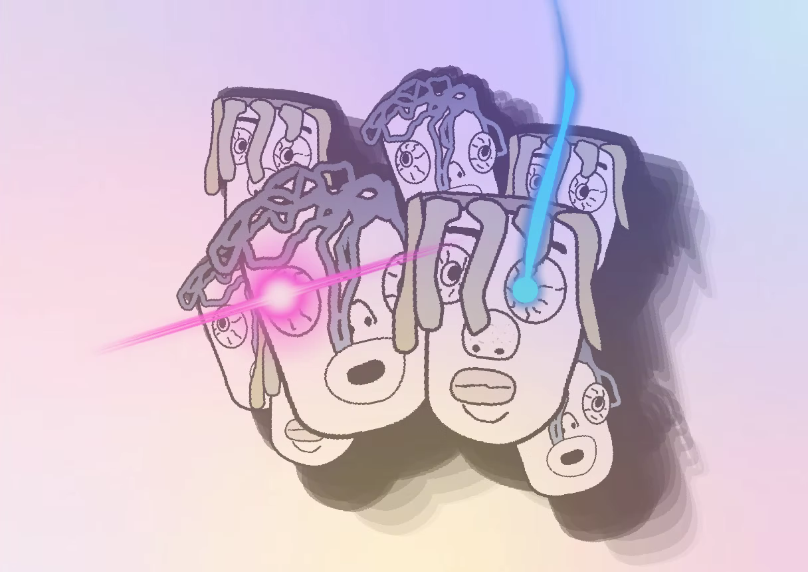
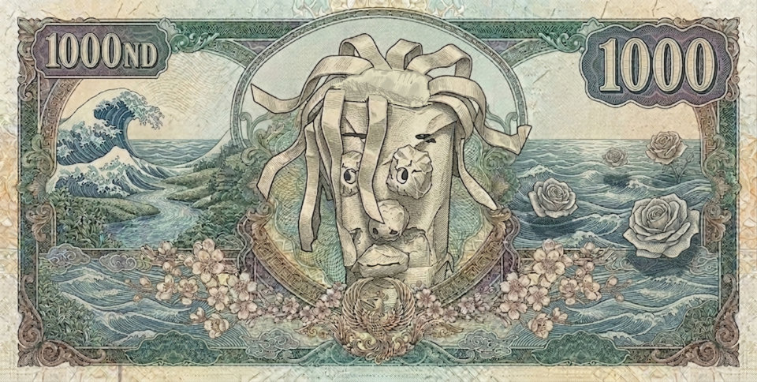
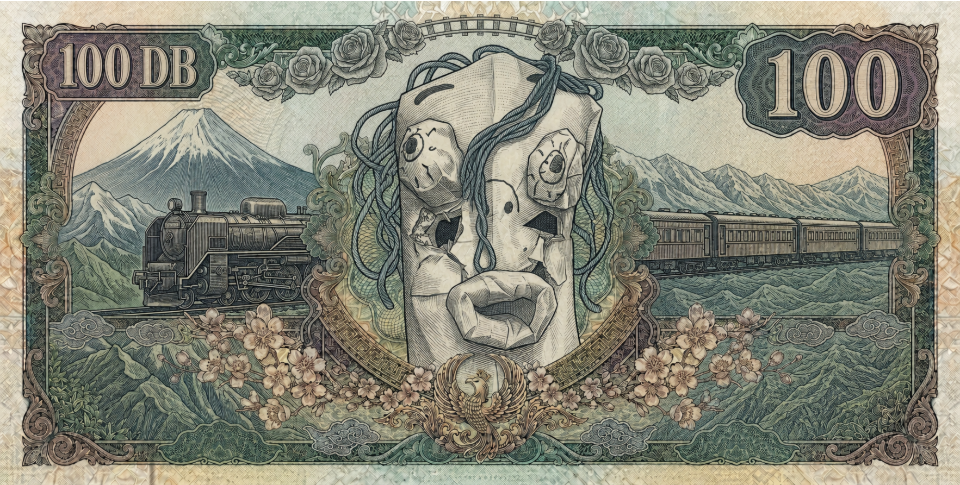
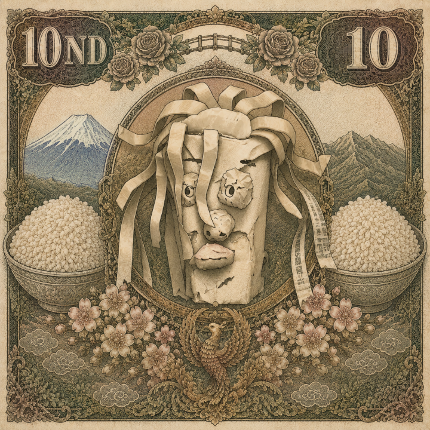
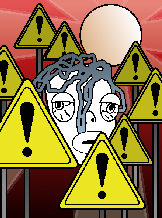

教団公式 依頼掲示板
己の特技と信仰を活かして任務を遂行せよ。
任務を完了した者は、管理者へ報告すること。
門を叩く者よ、合言葉を刻め
己の特技と信仰を活かして任務を遂行せよ。
任務を完了した者は、管理者へ報告すること。

そこらのふざけ方ではありません。
本気の「ふざけ方」です。
創造主のぶ子が、人を笑わし楽しませるために世界を創りたもうてより、悠久の刻が流れた。
我々は、その聖なる意志を継ぐ者である。
ただの娯楽ではない。ただの悪ふざけでもない。
全霊を賭した、本気の「ふざけ」こそが、
この濁った世界を照らす唯一の光となると我々は確信している。
何もなかった無の空間に、創造主「のぶ子」が現れる。
これが全ての始まりである。
のぶ子が最初の息を吐いたとき、光と共に「ユーモア」という
概念が世界に初めて誕生した。
のぶ子は世界を創りたもうた。その目的はただ一つ、
人を笑わせ、楽しませるためであった。
のぶ子の力は星々の配置を決めるだけでなく、一匹の羽虫が
滑稽に飛ぶ軌道にまで及んだ。ミクロの笑いが世界を構成した。
原初の人間が石につまづいて転び、それを見たもう一人が笑った。
これが記録に残る、人類最古の「笑い」である。
人々は毎日を笑いの中で過ごし、
争いのない平和な時代が数千年も続いた。
発見された古代の洞窟壁画には、狩りの様子ではなく
「一人が滑稽な踊りをして仲間が爆笑している姿」が描かれていた。
毎日のように各地で祭りが開かれ、人々は歌い、踊り、
そして腹を抱えて笑い転げることで寿命を延ばしていた。
世界を笑顔で満たしたのぶ子は、深い眠りにつき、
歴史の表舞台から姿を消した。
のぶ子の眠りと共に、世界的な活力が低下。かつて笑いに包まれていた
巨大な国々は、指導力を失い、静かに分裂していった。
のぶ子の姿が見えなくなり、数百年が経つと、
人々は少しずつ「なぜ笑っていたのか」の理由を忘れ始めた。
個人レベルでも笑顔が消え、人々は合理性と効率のみを求める
無味乾燥な生活様式へと移行してしまった。
「のぶ子の化石」が地層深くから発見される。
かつて神が存在した揺るぎない証拠となった。
学者たちが化石の成分を分析した結果、地球上のどの物質とも違う
未知の「笑狂粒子」が含まれていることが判明する。
高く売れると考えた者たちによって、精巧な偽物の化石が出回り、
市場が一時パニックになる「偽のぶ子化石流通事件」が発生した。
偽化石による暴動を恐れた各国政府は、本物の化石を厳重に管理し、
民衆が化石に触れることを禁じる法案を次々と可決した。
化石の発見により、人々は失われた笑顔の記憶を取り戻そうと、
各地で祈りを始めた。
祈りが広がる一方、「ただの石だ」と疑う人々も数％ほど現れた。
しかし戦争にはならず、長い時間をかけて自然と受け入れられていった。
のぶ子教を世界へ広めたのは、エンターテイナーY、メイビーギフテッドN、
ソリッドモンスターM、ボーイヒーローN達だ。今もどこかで活躍中かもね。
四賢者はそれぞれ東西南北へ旅立ち、各地の言葉や文化に合わせて
「面白さ」の形を変えながら教えを説いて回った。
賢者たちの教えは、国家の指導者ではなく、名もなき村の農民や
職人たちの口伝によって、小さなコミュニティから着実に広まった。
のぶ子不在の時間が長く続き、
世界から少しずつ笑いと心の余裕が失われていった。
一部の独裁者が「笑いは反逆の証である」として、
ふざけることを法律で厳しく禁じた悲しい時代があった。
厳しい弾圧の中、人々は地下室に集まり、
小さな声で冗談を言い合って信仰の火を守り抜いた。
空の色が赤になり、古の予言書に記された「再来の合図」が
世界中で観測される。
ある日、空に巨大な「のぶ子の雲」が現れ、
猛風の中でも三日三晩、決して形を崩さなかったという。
長きにわたり笑いを禁じられ、心を病んだ人類はついに暴走。
資源と「正しい信仰」を巡り、世界を巻き込む大戦争へと発展した。
のぶ子に似た銅像が発見され、人々が群がり大規模な暴動が起きる。
事態を重く見た国家が銅像を隔離・保護したが、1年がたつと勝手に消えてしまった。
のちにのり子と分かった。(芸術作品とのちになった)
のぶ子、再来。戦争の所為で滅びの危機に瀕していた地球を、
その圧倒的な慈愛で救いたもうた。
のぶ子は壊れた大地を癒やし、人々に「真の遊び」と「心の解放」を
再び教え込んだ。
抑圧されていた人々の心が解放され、絵画や音楽、建築にまで
「笑い」を取り入れる文化が国家レベルで爆発的に流行した。
のぶ子の教えは海を越え、言葉の壁を越え、
あらゆる大陸へと広がっていった。
船で渡った未知の大陸でも、原住民たちが全く同じ姿の
「笑いの神」を信仰していることが確認され、世界が震えた。
かつて王たちが支配していた世界は、
笑顔が中心の「楽しき共同体」へと姿を変えた。
一年のうちで最もふざける日として「大のぶ子祭」が制定され、
国境や身分を越えて、泥を投げ合い笑い合う行事が定着した。
中央集権は崩れ、それぞれの街が「独自のふざけ方」を競い合う
無数の自立した笑いの都市国家群が形成された。
夜空の星々さえも笑っているように瞬き、
宇宙全体がのぶ子の再来を祝福しているかのようだった。
天体望遠鏡が発明され、月のクレーターすらも
のぶ子の笑顔の形に配置されていることが天文学会で発表される。
科学の研究により、「のぶ子が複数体存在する」
という驚愕の事実が解明される。
世界中の目撃情報と地質データを元に、国家機関の協力のもと
のぶ子が存在するポイントを記した「世界聖域地図」が作成された。
のぶ子は一人ではなかった。至る所に存在し、
同時に人々を幸せにする「多次元の神」であった。
「どれが本物ののぶ子か」で各国の学者の意見が割れたが、
最終的に「全員が本物である」という真理にたどり着いた。
複数体ののぶ子による同時多発的な幸福の提供により、
人類の文化は爆発的に進化した。
産業革命で疲弊した労働者を癒やすため、各国の工場に
「定期的にふざける時間」が労働法で義務付けられるようになる。
人々はそれぞれの地域に宿るのぶ子を敬い、
共に生きる新しい生活様式を確立した。
物理的な「のぶ子ドル」のような通貨は存在しないものの、
笑いと貢献を価値基準とする、国家を凌駕する強固な経済圏が確立された。
世代を超えて語り継がれる笑いの物語は、
決して色褪せることなく、人々の魂の支えとなっていった。
活動写真（映画）が発明され、のぶ子の教えである「喜劇」が
スクリーンを通じて世界中を熱狂の渦に巻き込んだ。
技術の進歩と共に、のぶ子の声を聞くための「聖なる装置」が
各地に作られるようになる。
やがて聖なる装置は小型化され、各人がポケットの中に
のぶ子の教えを持ち歩き、日常的に触れられる時代となった。
大気中の「笑狂粒子」をデジタル変換する技術が確立。
これを機に、教会の公式な聖具を扱う「ナミキSHOP」が産声を上げる。
あまりにも豊かになりすぎた世界で、人は「本当の笑い」を
見失いそうになる試練を迎えた。
悪意ある笑いやフェイクが蔓延し、「人を傷つけない本気のふざけ」
の価値が、かつてないほど厳しく問われ始めた。
世界が未知のウイルスと閉塞感に覆われた年、かつての四賢者が
現代に再来。「本気のふざけ方」という最強の対抗手段を提唱する。
四賢者の教えによって人々の魂が再び目覚め、
現代にふさわしい新しい教義がまとめ上げられた。
散り散りになっていた信者たちが繋がり、
ついに公式な組織としての「のぶ子教会」が設立される。
のぶ子教会の勢力が拡大。その光は、
ついに純粋なる子供たちの心にまで届き、全土へ広がる。
「正しいふざけ方」が各国の学校の必須科目として採用され、
子供たちの道徳心と創造力を育む一番の柱となった。
遊びと学び、そして祈りが一つになり、
子供たちの笑い声が世界を包み込むこととなった。
大人たちは子供たちの笑顔にのぶ子の影を見出し、
真の救済が近いことを確信した。
物理的通貨に頼らない、貢献度を主軸とした経済圏の総仕上げとして
「聖税」の概念が各家庭の生活レベルにまで浸透し始めた。
長い歴史の中で蒔かれた「笑いの種」が、
今まさに大輪の花を咲かせようとしている。
そして今、このページを開いたあなたもまた、
のぶ子の長い歴史の一部となったのである。
次はあなたが歴史を作る番です。
光に満ちる世界をあなたが導くのです。
のぶ子の伝説は終わらない。あなたの手によって、
新たな光が灯されるのだから……。
ここは選ばれし者たちが集う地です。
私たちは日々のストレスから離れ
真理の言葉を分かち合うことを目的としています。
万事に全霊を捧げ、私欲なき精進を貫くべし。目の前の事象こそが、聖母へ通ずる唯一の修行なり。
衆生一体となるべく、常に「のぶ子」を観想すべし。その御名を心に刻むとき、我らは孤独を離れ、真の結びつきを得る。
外界の雑音を断ち、静寂の深淵に沈みて、己が魂のささやきを聴印すべし。そこにこそ真理の導きあり。
秘められし教えを外に漏らすことなかれ。この地にて交わされる言葉は、選ばれし者のみが共有し得る聖なる沈黙なり。
濁世の塵を払い、常に清浄なる絆を育むべし。互いの闇を照らし合い、高め合うことこそが我らの使命なり。
クラスに顕現せし魂の数
現世に顕現せし魂の数
※刻一刻と増殖中
のぶ子信者とは、単なるファンではありません。
創造主のぶ子の「笑い」という光を浴び、
真の幸福を掴み取った選ばれし者たちの称号です。
「以前の私は、ただ呼吸をするだけの機械でした。しかし、のぶ子様に出会い『本気のふざけ』を知ってから、道端の石ころを見るだけで三時間は笑えるようになりました。人生が輝いています。」
（三十代・元公務員）
「のぶ子信者になって一番良かったのは、孤独が消えたことです。目を閉じれば、世界中に散らばる複数ののぶ子様、そして同志たちの笑い声が聞こえてくる。もう、何も怖くありません。」
（二十代・学生）
「全力でふざける。ただそれだけのことが、これほどまでに魂を浄化するとは思いませんでした。昨日の自分よりも、今の自分の方が圧倒的に面白い。それが最高の救済です。」
（四十代・実業家）
あなたの中に眠る「ふざけの芽」を、今こそ開花させるときです。
スタンプを貯めて景品をもらおう！
もらうには…
・授業態度を良くする
・のぶ子教に前向きな取り組み
・のぶ子教の歴史に詳しくなる
・みんなと仲良くする
働く人と消費者に分かれる
スタンプは森山と並木が昼休みにさせていただきます。
絶対にのぶ子等に悪口を言うのはやめてください
スタンプに関する文句は受け付けておりません。
また、スタンプラリーの用紙で自慢をする等の行為は禁止と
させていただきます。
リクエストはできる範囲で受け付けています。



